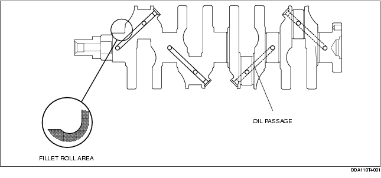
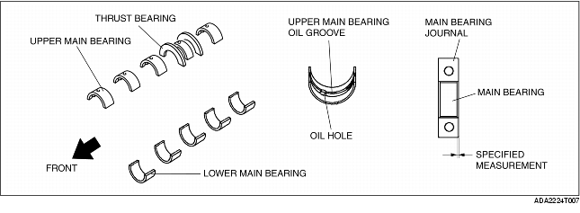

CRANKSHAFT, MAIN BEARING CONSTRUCTION [ZY]
id0110001008c0
• Cast iron shaft bearings (5) and counterweights (8) have been adopted to ensure appropriate crank balancing.
• An oil line for supplying oil to each journal is provided in the crankshaft. Crank pins and fillets on both sides of the journal are rolled to bear heavy loads.

• Upper and lower main bearings are made of aluminum alloy. The upper main bearing has oil grooves and oil hole.
• There is no upper and lower bearings' positioning tab for installing the main journal.
• Measure and attach the main bearings (upper and lower) so that they are positioned at the center of the main bearing cap.

• Three kinds of main bearings are available depending on the oil clearance.
|
Bearing size
|
Bearing thickness (mm {in})
|
|
Standard
|
2.511-2.529 {0.0989-0.0995}
|
|
0.25 {0.01} Oversize
|
2.625-2.635 {0.1034-0.1037}
|
|
0.50 {0.02} Oversize
|
2.750-2.760 {0.1083-0.1086}
|